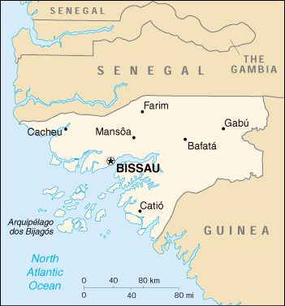

|
Guinea-Bissau | |
| Introduction Geography People Government Economy Communications Transportation Military Transnational Issues | ||
|  | ||
| Guinea-Bissau | Introduction | Top of Page |
| Background: | In 1994, 20 years after independence from Portugal, the country's first multiparty legislative and presidential elections were held. An army uprising that triggered a bloody civil war in 1998, created hundreds of thousands of displaced persons. The president was ousted by a military junta in May 1999. An interim government turned over power in February 2000 when opposition leader Koumba YALLA took office following two rounds of transparent presidential elections. Guinea-Bissau's transition back to democracy will be complicated by a crippled economy devastated by civil war and the military's predilection for governmental meddling. |
| Guinea-Bissau | Geography | Top of Page |
| Location: | Western Africa, bordering the North Atlantic Ocean, between Guinea and Senegal |
| Geographic coordinates: | 12 00 N, 15 00 W |
| Map references: | Africa |
| Area: |
total:
36,120 sq km
land: 28,000 sq km water: 8,120 sq km |
| Area - comparative: | slightly less than three times the size of Connecticut |
| Land boundaries: |
total:
724 km
border countries: Guinea 386 km, Senegal 338 km |
| Coastline: | 350 km |
| Maritime claims: |
exclusive economic zone:
200 NM
territorial sea: 12 NM |
| Climate: | tropical; generally hot and humid; monsoonal-type rainy season (June to November) with southwesterly winds; dry season (December to May) with northeasterly harmattan winds |
| Terrain: | mostly low coastal plain rising to savanna in east |
| Elevation extremes: |
lowest point:
Atlantic Ocean 0 m
highest point: unnamed location in the northeast corner of the country 300 m |
| Natural resources: | fish, timber, phosphates, bauxite, unexploited deposits of petroleum |
| Land use: |
arable land:
11%
permanent crops: 1% permanent pastures: 38% forests and woodland: 38% other: 12% (1993 est.) |
| Irrigated land: | 17 sq km (1993 est.) |
| Natural hazards: | hot, dry, dusty harmattan haze may reduce visibility during dry season; brush fires |
| Environment - current issues: | deforestation; soil erosion; overgrazing; overfishing |
| Environment - international agreements: |
party to:
Biodiversity, Climate Change, Desertification, Endangered Species, Law of the Sea, Wetlands
signed, but not ratified: none of the selected agreements |
| Guinea-Bissau | People | Top of Page |
| Population: | 1,315,822 (July 2001 est.) |
| Age structure: |
0-14 years:
42.09% (male 276,312; female 277,536)
15-64 years: 55.05% (male 344,493; female 379,889) 65 years and over: 2.86% (male 16,850; female 20,742) (2001 est.) |
| Population growth rate: | 2.23% (2001 est.) |
| Birth rate: | 39.29 births/1,000 population (2001 est.) |
| Death rate: | 15.33 deaths/1,000 population (2001 est.) |
| Net migration rate: | -1.66 migrant(s)/1,000 population (2001 est.) |
| Sex ratio: |
at birth:
1.03 male(s)/female
under 15 years: 1 male(s)/female 15-64 years: 0.91 male(s)/female 65 years and over: 0.81 male(s)/female total population: 0.94 male(s)/female (2001 est.) |
| Infant mortality rate: | 110.4 deaths/1,000 live births (2001 est.) |
| Life expectancy at birth: |
total population:
49.42 years
male: 47.12 years female: 51.78 years (2001 est.) |
| Total fertility rate: | 5.2 children born/woman (2001 est.) |
| HIV/AIDS - adult prevalence rate: | 2.5% (1999 est.) |
| HIV/AIDS - people living with HIV/AIDS: | 14,000 (1999 est.) |
| HIV/AIDS - deaths: | 1,300 (1999 est.) |
| Nationality: |
noun:
Guinean (s)
adjective: Guinean |
| Ethnic groups: | African 99% (Balanta 30%, Fula 20%, Manjaca 14%, Mandinga 13%, Papel 7%), European and mulatto less than 1% |
| Religions: | indigenous beliefs 50%, Muslim 45%, Christian 5% |
| Languages: | Portuguese (official), Crioulo, African languages |
| Literacy: |
definition:
age 15 and over can read and write
total population: 53.9% male: 67.1% female: 40.7% (1997 est.) |
| Guinea-Bissau | Government | Top of Page |
| Country name: |
conventional long form:
Republic of Guinea-Bissau
conventional short form: Guinea-Bissau local long form: Republica da Guine-Bissau local short form: Guine-Bissau former: Portuguese Guinea |
| Government type: | republic, multiparty since mid-1991 |
| Capital: | Bissau |
| Administrative divisions: | 9 regions (regioes, singular - regiao); Bafata, Biombo, Bissau, Bolama, Cacheu, Gabu, Oio, Quinara, Tombali; note - Bolama may have been renamed Bolama/Bijagos |
| Independence: | 24 September 1973 (unilaterally declared by Guinea-Bissau); 10 September 1974 (recognized by Portugal) |
| National holiday: | Independence Day, 24 September (1973) |
| Constitution: | 16 May 1984, amended 4 May 1991, 4 December 1991, 26 February 1993, 9 June 1993, and 1996 |
| Legal system: | NA |
| Suffrage: | 18 years of age; universal |
| Executive branch: |
chief of state:
President Koumba YALLA (since 18 February 2000)
head of government: Prime Minister Faustino IMBALI (since 20 March 2001) cabinet: NA elections: president elected by popular vote for a five-year term; election last held 28 November 1999 and 16 January 2000 (next to be held NA 2004); prime minister appointed by the president after consultation with party leaders in the legislature election results: Koumba YALLA elected president; percent of vote, second ballot - Koumba YALLA (PRS) 72%, Malan Bacai SANHA (PAIGC) 28% |
| Legislative branch: |
unicameral National People's Assembly or Assembleia Nacional Popular (100 seats; members are elected by popular vote to serve a maximum of four years)
elections: last held 28 November 1999 (next to be held by NA 2003) election results: percent of vote by party - NA%; seats by party - PRS 37, RGB 27, PAIGC 25, 11 remaining seats went to 5 of the remaining 10 parties that fielded candidates |
| Judicial branch: | Supreme Court or Supremo Tribunal da Justica (consists of nine justices who are appointed by the president and serve at his pleasure; final court of appeals in criminal and civil cases); Regional Courts (one in each of nine regions; first court of appeals for Sectoral Court decisions; hear all felony cases and civil cases valued at over $1,000); 24 Sectoral Courts (judges are not necessarily trained lawyers; they hear civil cases under $1,000 and misdemeanor criminal cases) |
| Political parties and leaders: | African Party for the Independence of Guinea-Bissau and Cape Verde or PAIGC [Francisco BENANTE]; Front for the Liberation and Independence of Guinea or FLING [Francois MENDY]; Guinea-Bissau Resistance-Ba Fata Movement or RGB-MB [Helder Vaz LOPES]; Guinean Civic Forum or FCG [Antonieta Rosa GOMES]; International League for Ecological Protection or LIPE [Alhaje Bubacar DJALO, president]; National Union for Democracy and Progress or UNDP [Abubacer BALDE, secretary general]; Party for Democratic Convergence or PCD [Victor MANDINGA]; Social Renovation Party or PRS [Koumba YALLA]; Union for Change or UM [Jorge MANDINGA, president, Dr. Anne SAAD, secretary general]; United Social Democratic Party or PUSD [Victor Sau'de MARIA] |
| Political pressure groups and leaders: | NA |
| International organization participation: | ACCT (associate), ACP, AfDB, ECA, ECOWAS, FAO, FZ, G-77, IBRD, ICAO, ICFTU, ICRM, IDA, IDB, IFAD, IFC, IFRCS, ILO, IMF, IMO, Intelsat (nonsignatory user), Interpol, IOC, IOM, ITU, NAM, OAU, OIC, OPCW, UN, UNCTAD, UNESCO, UNIDO, UPU, WADB (regional), WAEMU, WFTU, WHO, WIPO, WMO, WToO, WTrO |
| Diplomatic representation in the US: |
chief of mission:
Ambassador Mario LOPES DA ROSA
chancery: Suite 519, 1511 K Street, NW, Washington, DC 20005 telephone: [1] (202) 347-3950 FAX: [1] (202) 347-3954 |
| Diplomatic representation from the US: | the US Embassy suspended operations on 14 June 1998 in the midst of violent conflict between forces loyal to then President VIEIRA and military-led junta |
| Flag description: | two equal horizontal bands of yellow (top) and green with a vertical red band on the hoist side; there is a black five-pointed star centered in the red band; uses the popular pan-African colors of Ethiopia |
| Guinea-Bissau | Economy | Top of Page |
| Economy - overview: | One of the 20 poorest countries in the world, Guinea-Bissau depends mainly on farming and fishing. Cashew crops have increased remarkably in recent years, and the country now ranks sixth in cashew production. Guinea-Bissau exports fish and seafood along with small amounts of peanuts, palm kernels, and timber. Rice is the major crop and staple food. However, intermittent fighting between Senegalese-backed government troops and a military junta destroyed much of the country's infrastructure and caused widespread damage to the economy in 1998; the civil war led to a 28% drop in GDP that year, with partial recovery in 1999-2000. Before the war, trade reform and price liberalization were the most successful part of the country's structural adjustment program under IMF sponsorship. The tightening of monetary policy and the development of the private sector had also begun to reinvigorate the economy. Because of high costs, the development of petroleum, phosphate, and other mineral resources is not a near-term prospect. However, unexploited offshore oil reserves could provide much-needed revenue in the long run. |
| GDP: | purchasing power parity - $1.1 billion (2000 est.) |
| GDP - real growth rate: | 7.6% (2000 est.) |
| GDP - per capita: | purchasing power parity - $850 (2000 est.) |
| GDP - composition by sector: |
agriculture:
54%
industry: 15% services: 31% (1997 est.) |
| Population below poverty line: | 50% (1991 est.) |
| Household income or consumption by percentage share: |
lowest 10%:
0.5%
highest 10%: 42.4% (1991) |
| Inflation rate (consumer prices): | 3% (2000 est.) |
| Labor force: | 480,000 |
| Labor force - by occupation: | agriculture 78% |
| Unemployment rate: | NA% |
| Budget: |
revenues:
$NA
expenditures: $NA, including capital expenditures of $NA |
| Industries: | agricultural products processing, beer, soft drinks |
| Industrial production growth rate: | 2.6% (1997 est.) |
| Electricity - production: | 55 million kWh (1999) |
| Electricity - production by source: |
fossil fuel:
100%
hydro: 0% nuclear: 0% other: 0% (1999) |
| Electricity - consumption: | 51.2 million kWh (1999) |
| Electricity - exports: | 0 kWh (1999) |
| Electricity - imports: | 0 kWh (1999) |
| Agriculture - products: | rice, corn, beans, cassava (tapioca), cashew nuts, peanuts, palm kernels, cotton; timber; fish |
| Exports: | $80 million (f.o.b., 2000 est.) |
| Exports - commodities: | cashew nuts 70%, shrimp, peanuts, palm kernels, sawn lumber (1996) |
| Exports - partners: | India 59%, Singapore 12%, Italy 10% (1998) |
| Imports: | $55.2 million (f.o.b., 2000 est.) |
| Imports - commodities: | foodstuffs, machinery and transport equipment, petroleum products (1996) |
| Imports - partners: | Portugal 26%, France 8%, Senegal 8%, Netherlands 7% (1998) |
| Debt - external: | $964 million (1998 est.) |
| Economic aid - recipient: | $115.4 million (1995) |
| Currency: | Communaute Financiere Africaine franc (XOF); note - responsible authority is the Central Bank of the West African States; previously the Guinea-Bissau peso (GWP) was used |
| Currency code: | XOF; GWP |
| Exchange rates: |
Communaute Financiere Africaine francs (XOF) per US dollar - 699.21 (January 2001), 711.98 (2000), 615.70 (1999), 589.95 (1998), 583.67 (1997); Guinea-Bissauan pesos per US dollar - 26,373 (1996)
note: as of 1 May 1997, Guinea-Bissau adopted the CFA franc as the national currency; since 1 January 1999, the CFA franc is pegged to the euro at a rate of 655.957 CFA francs per euro |
| Fiscal year: | calendar year |
| Guinea-Bissau | Communications | Top of Page |
| Telephones - main lines in use: | 8,000 (1997) |
| Telephones - mobile cellular: | NA |
| Telephone system: |
general assessment:
small system
domestic: combination of microwave radio relay, open-wire lines, radiotelephone, and cellular communications international: NA |
| Radio broadcast stations: | AM 1, FM 2, shortwave 0 (1998) |
| Radios: | 49,000 (1997) |
| Television broadcast stations: | 2 (1997) |
| Televisions: | NA |
| Internet country code: | .gw |
| Internet Service Providers (ISPs): | 1 (2000) |
| Internet users: | 1,500 (2000) |
| Guinea-Bissau | Transportation | Top of Page |
| Railways: | 0 km |
| Highways: |
total:
4,400 km
paved: 453 km unpaved: 3,947 km (1996) |
| Waterways: | several rivers are accessible to coastal shipping |
| Ports and harbors: | Bissau, Buba, Cacheu, Farim |
| Merchant marine: | none (2000 est.) |
| Airports: | 29 (2000 est.) |
| Airports - with paved runways: |
total:
3
over 3,047 m: 1 1,524 to 2,437 m: 1 914 to 1,523 m: 1 (2000 est.) |
| Airports - with unpaved runways: |
total:
26
1,524 to 2,437 m: 1 914 to 1,523 m: 4 under 914 m: 21 (2000 est.) |
| Guinea-Bissau | Military | Top of Page |
| Military branches: | People's Revolutionary Armed Force (FARP; includes Army, Navy, and Air Force), paramilitary force |
| Military manpower - availability: | males age 15-49: 305,071 (2001 est.) |
| Military manpower - fit for military service: | males age 15-49: 173,703 (2001 est.) |
| Military expenditures - dollar figure: | $8 million (FY96) |
| Military expenditures - percent of GDP: | 2.8% (FY96) |
| Guinea-Bissau | Transnational Issues | Top of Page |
| Disputes - international: | none |
{kind=link}